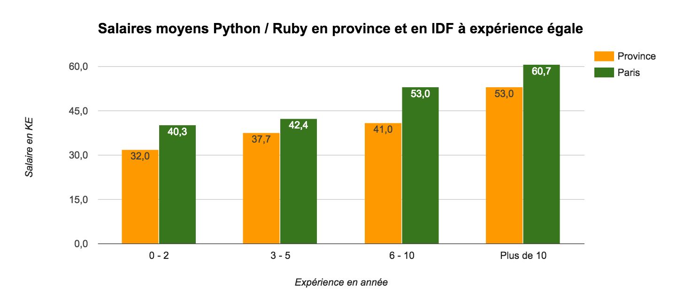

Atilla
Formation Python
Python, c'est quoi?
Langage de programmation interprété multi-paradigme
- Impératif
- Fontionnel
- Orienté objet
Créé en 1990 par Guido van Rossum Inspiré de ABC, de Modula-3, du C et des outils UNIX.
Une grande communauté
165k projets sur Github
7.5% du nombre total de projets
5ème langage de programmation le plus utilisé
Un langage où tout est déjà programmé
Une bibliothèque standard immense
“Batteries included“
import os
import sys
import random
import itertools
import functools
from math import cos, sqrt
Un langage où tout est déjà programmé
Si vous cherchez un module, il existe sans doute déjà parmi les 76000 sur PyPI
sudo apt-get install python-pip
pip install PackageName
python3.4 -m pip install PackageName
pip install Django 1.8.5
pip install PdfEditor 0.0.3
D'autres interpréteurs
CPython est l'interpréteur que tout le monde utilise.
Des implémentations supplémentaires: Jython, Cython, PyPy, etc..
Et pour ceux qui ont peur de tout casser
Ou ceux qui veulent pouvoir gérer des versions différentes entre projetsVirtualenv est votre ami
Virtualenv est un outil fait pour créer des environnements isolés
pip install virtualenv # Pour intaller virtualenv
virtualenv env # Pour creer un environnement
source env/bin/activate # Pour le lancer
Python 2 ou Python 3 ?
Python 3.
Python 2 pour vieux projets et pour packages manquants sur Python 3
Python 3 est restructuré et en UTF-8 par défaut
Mais du coup il n'est pas rétrocompatible
Apparition des générateurs un peu partout
Pip est intégré
Pourquoi apprendre Python ?
La grille des salaires
Salaire moyen au dessus de la moyenne globale de +8,2% 
Langage lisible
def factorielle(x):
if x < 2:
return 1
else:
return x * factorielle(x - 1)
PEP8 (Python Extension Proposal)
Un guide syntaxique communautaire
4 espaces pour indentation, 79 caractères par ligne
Aucune tabulation
Deux lignes entre les classes, une seule entre les méthodes
Un domaine d'utilisation large
Creation de sites web (Django, Flask, Pyramid, Tornado)
Outils de monitoring, de gestion de processus
En recherche
Petit scripts (ex: télécharger tous les fonds d'écran de Wallhaven)
Un langage interprété, oui mais...
Suffisament rapide pour la grande majorité de vos problèmes.
En cas de soucis, utilisez de bons algorithmes et des structures de données adpatées.
Rapide d'utilisation, rapide à prendre en main
Facile à débugger
Notamment à l'aide de la traceback
Python, le coup de foudre
Manipuler une liste n'a jamais été aussi facile ! (1)
asso_liste = ["Atilla", "BDE Stay High", "EISTI Poker"]
asso_liste.append("Cap'EISTI") # Ajoute à la fin de la liste
asso_liste.remove("Atilla") # Retire l'élément "Atilla"
dernier = asso_liste.pop() # Retire et renvoie le dernier
if "BDE Stay High" in asso_liste:
indice = asso_liste.index("Atilla") # indice = 0
for asso in asso_liste:
print(asso)
Manipuler une liste n'a jamais été aussi facile ! (2)
asso_liste = ["Atilla", "BDE Stay High", "EISTI Poker"]
if "Contr'Eisti" not in asso_liste:
print("Il manque des associations !")
# Liste en compréhension
minuscule = [asso.lower() for asso in asso_liste]
filtre = [asso for asso in asso_liste if len(asso) <= 9]
if asso_liste: # La liste n'est pas vide
print("Il reste encore des associations à l'EISTI")
for indice, asso in enumerate(reversed(asso_liste)):
print(indice, "/ ", asso)
Manipuler une liste n'a jamais été aussi facile ! (3)
somme = sum(x ** 2 for x in range(1000))
minimum = min([1, -5, 4, 3])
asso_liste = ["Atilla", "BDE Stay High", "EISTI Poker"]
dernier = asso_liste[-1] # asso_liste[len(asso_liste) - 1], berk !
# slicing: asso_liste[debut:fin:pas]
dix_premiers = asso_liste[:10]
dix_derniers = asso_liste[-10:]
sans_les_dix_premiers = asso_liste[10:]
asso_liste[3:7] # Du 4ème au 7ème !
Une belle fonction récursive
Tu sens arriver la mémoïsation?
def fib(n):
"""Suite de fibonacci, mais c'est super lent ! :("""
if n <= 1:
return 1
else:
return fib(n - 1) + fib(n - 2)
Utilisons un décorateur !
Un décorateur est une fonction qui prend en paramètre une fonction et qui renvoie une fonction
def decorateur(fonction):
# *args et **kwargs servent à définir un nombre indéterminé
# de paramètre positionnels et paramètre nommé
# f(arg_pos1, arg_pos2, kwarg1="lol", kwargs2=True)
def autre_fonction(*args, **kwargs):
print(args, kwargs)
return fonction(*args, **kwargs)
return autre_fonction
@decorateur
def add(x, y):
return x + y
# Sucre syntaxique pour
def add(x, y):
return x + y
add = decorateur(add)
>>> add(2, 3) # Affiche (2, 3) {} et retourne 5
Ajoutez un cache à vos fonctions !
import functools
@functools.lru_cache(maxsize=None)
def fib(n):
"""Suite de fibonacci, super rapide !"""
if n <= 1:
return 1
else:
return fib(n - 1) + fib(n - 2)
Vous n'avez jamais autant aimé chercher dans un dictionaire !
Un dictionnaire, c'est comme un tableau sauf qu'au lieu des indices on a une clé !
dico = {} # Dictionnaire vide
dico["ma clé"] = 42
print(dico["ma clé"]) # 42
print("ma clé" in dico) # True
print(dico["autre clé"]) # Une exception est levée
print(dico.get("autre clé") is None) # True
Vous n'avez jamais autant aimé chercher dans un dictionaire ! (2)
- Très utile pour représenter une liste d'adjacence (graphe)
- Ou tout simplement pour associer des valeurs à des objets
personnes = ["H", "F", "H", "F", "F"]
d = {}
for personne in personnes:
if personne not in d:
d[personne] = 1
else:
d[personne] += 1
>>> d
{'H': 2, 'F': 3}
>>> set(personnes) # {'H', 'F'}
# Cette ligne marche peu importe le nombre de genres et leur type !
d = {genre: personnes.count(genre) for genre in set(personnes)}
On dirait pas comme ça mais vous avez rencontré vos deux meilleurs amis !
Je parle de la liste et du dictionnaire si vous ne suivez pas
Python est amour !
Python est objets !
Les objets en Python, comment ça marche?
- Tout est objet ! (Même les fonctions, même les classes !)
- Tout est public ! Privé est une convention d'écriture
- Héritage multiple
- Interface et abstraction via le module ABC
- Duck typing
Si je vois un animal qui vole comme un canard, cancane comme un canard, et nage comme un canard, alors j'appelle cet oiseau un canard
Déclarer une classe
class Foo(object): # new-style class (versus Foo())
count = 0 # Attribut de classe
def __init__(self): # Constructeur
self.x = 42 # Attribut d'instance
self.__class__.count += 1
obj = Foo()
>>> obj.count # 1
>>> obj.x # 42
obj2 = Foo()
>>> obj2.count # 2
>>> obj.count == obj2.count # True
obj.y = 0 # On peut assigner de nouveaux attributs
>>> obj.inconnu # Lève une exception
Héritage
On remonte le scope dans l'ordre des parents (__mro__)
class Foo(object):
count = 0
def __init__(self):
self.x = 42
self.__class__.count += 1
class Bar(Foo, object):
def add(self, x):
return self.x + x
def _methode_prive(self):
print("Regarde ailleurs !")
f = Foo()
b = Bar()
>>> b.count # 2
>>> b.add(2) # 44
Surcharge d'opérateur
import sys
class Penis(object):
def __len__(self):
return sys.maxsize
def __gt__(self, x):
return True
penis = Penis()
>>> len(penis) # 9223372036854775807
>>> penis > 42 # True
>>> penis < 42 # Une exception est levée
Où apprendre?
- Programming in Python de Sedgewick
- Dive into Python
- Lancez vous ! (Peut être pour le futur concours d'IA?)
Aller plus loin...
Notions avancés !
- Générateur
- Closure
- Le piège de l'argument par défaut
- Co-routine
- asyncio (Python 3.5)
- Meta classe
- Binding C
- Fonctionnement interne des structures de données
Une belle pile d'éxécution
Dijkstra en quelques lignes?
def dijkstra(graph, begin):
"""graph is a dict as an adjacent list.
graph[node] = [(weight, dest), ...]
"""
heap = copy.deepcopy(graph[begin])
heapq.heapify(heap)
shortests = {begin: 0}
while heap:
w, d = heapq.heappop(heap)
if d not in shortests:
shortests[d] = w
for weight, dest in graph[d]:
heapq.heappush(heap, (shortests[d] + weight, dest))
return shortests
C'est l'heure du gou.. du TP !
Exercice
Écrire une classe PrimeManipulator dont l'instance peut:- Déterminer si un nombre est premier
- Déterminer la décomposition en facteur premier d'un nombre
- Stocker les nombres premiers trouvés pour aller plus vite
- Avoir pour ième élement le ième nombre premier